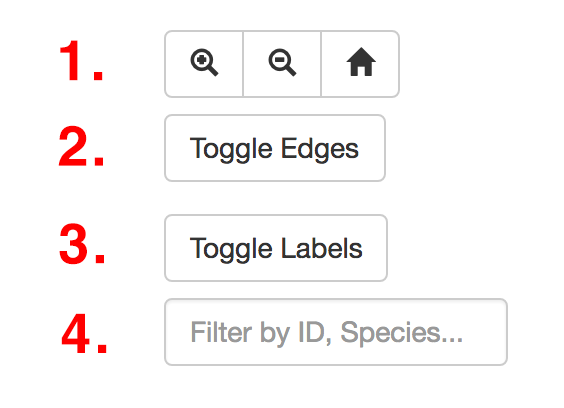

Protein ID:
Species:
Genus:
Order:
Node Degree:
Protein Length:
Sequence:
This is a sequence similarty network. Each node represents a protein. An edge/line joining two nodes represents shared sequence similarity between the two proteins. Proteins are coloured according to their genus.
The network can be filtered to hide/show particular proteins (e.g. by Genus or Order) using the buttons on the right.
